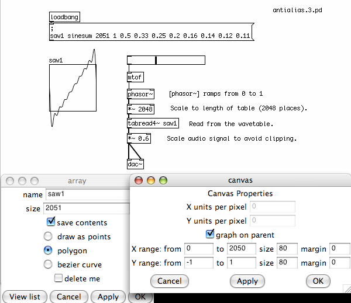

Antialiasing
Outline
This chapter describes different techniques for avoiding aliasing artifacts in digital oscillators in Pd, including the combination of oversampling plus low pass filteringas well as the use of bandlimited oscillators.
Introduction: What is Aliasing?
As discussed in the What is Digital Audio chapter, aliasing occurs when frequencies are generated in a Pd patch which are above the Nyquist frequency, or half the current audio sampling rate. Thus, for a computer replaying audio at the CD audio rate of 44,100 Hz per second, the Nyquist frequency is 22,050 Hz. Trying to reproduce any frequency higher than this creates unwanted extra frequencies in the sound. Subjectively, these aliasing noises are what can cause oscillators to sound "cheap", "cold" or "digital" in comparison with "warm" or "analog" antialiased ones.
All waveforms except a sine wave produce harmonics which are multiples of the fundamental frequency. Even if we never create an oscillator with a frequency higher than 22,050 Hz, the harmonics of any oscillator besides an [osc~] could easily go over this frequency, resulting in aliasing. Aliasing noise is almost impossible to remove once it occurs, so if we do not want to hear these inharmonic sounds, we must do something to prevent them.
The Problem: an Aliasing Oscillator
Looking at some of the oscillators covered earlier, we can see that none of them have any sort of antialiasing built into them. The following square wave, although normalized and DC offset-corrected to a full range of -1 to 1, produces many aliased frequencies which can be heard when the frequency is changed. These are heard as inharmonic sounds which "reflect" down from the Nyquist frequency as the frequency of the oscillator is increased. These aliasing noises are sometimes called "birdies".

Oversampling and Filtering
One technique of antialiasing filtering involves applying a low pass filter. Because no filter is perfect, every filter has a slope from the cutoff frequency, which is the frequency at which it starts to affect the sound, to the point where the frequencies are completely removed. In order to remove the high frequency harmonics which cause aliasing, we would need a filter which has sufficient attenuation at those frequencies to reduce them below the level of hearing.
In order to create such a filter, we need to increase the sampling rate to give us the frequency range required. This process is called oversampling, and in Pd this can be done with the object [block~]. When given the creation arguments "1024 1 16", [block~] will oversample the audio which comes into a subpatch by a factor of 16 (i.e. up to 705.6 KHz if the current sampling rate is 44.1 KHz), in chunks of 1024 samples at a time. The signal can then be digitally filtered, removing the higher harmonics which could cause aliasing, and when it leaves the subpatch it will be downsampled back to the original sampling rate.

The antialiasing filter shown above is taken from the example J07.oversampling.pd in the 03.audio.examples folder found in the Pd Documentation Browser in the application.
Because this is a very CPU intensive process, it is wise to only include the oscillators you wish to antialias in this subpatch, and to control them via the [inlet]s of the subpatch!
Bandlimited Waveforms
Another solution to this problem is to use waveforms which produce fewer harmonics for the oscillators. These waveforms are said to be bandlimited, because the number of harmonics in them have been limited by the shape of the wave. Bandlimited waveforms are usually the product of a combination of sine waveforms which add together to produce a certain shape. An example of this is shown below.

Example taken from audio design coursework by Andy Farnell.
The message
; saw1 sinesum 2051 1 0.5 0.33 0.25 0.2 0.16 0.14 0.12 0.11is an internal message which tells Pd to fill up 2051 places of the table "saw 1" with the product of a series of nine sinewaves. You can see the table, "saw 1" on the left, with the bandlimited waveform, and it's properties are shown below. To play the table back, the ramp of a [phasor~] is multiplied by 2048 and is sent to a [tabread4~] object, which uses the incoming audio as the index to play back table "saw 1". The audio which comes out must be scaled slightly because, as can be seen from the table, the waveform has extremes outside the normal -1 to 1 bounds.
It should be noted that no technique can completely eliminate aliasing noise, as eventually any oscillator which is not a pure sinewave will eventually produce harmonics above the Nyquist frequency when its frequency is increased. The above oscillator is no exception, and sounds best when used as a bass synthesizer. For more information on bandlimited oscillators, see the Generating Waveforms chapter in this FLOSS Manual.